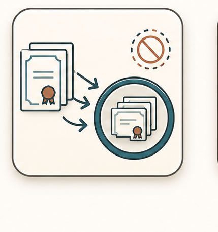

01
Identify re-registering funds from the TOA TIK column.
TIK workflows reuse parts of the mapping structure but mark re-registered funds differently. Shares are accepted into Fidelity accounts set up by Matt O'Connell's team, then final files complete participant-level detail without trades going out.

Identify re-registering funds from the TOA TIK column.
Send fund/share details to Matt O'Connell and wait for account setup confirmation.
Send Fidelity account instructions to the vendor.
Check in before wire/liquidation day and keep the tracking spreadsheet current.
Update final-file share amounts so Matt's team knows exactly what to locate.
Run day-of-wire and CIT balance workflows with no trades going out, then confirm with Matt's team.
Matt's team may only have the email to identify shares, so accurate share amounts matter.
A discrepancy above roughly one share needs escalation.
No trades go out for TIK once participant balances are whole.